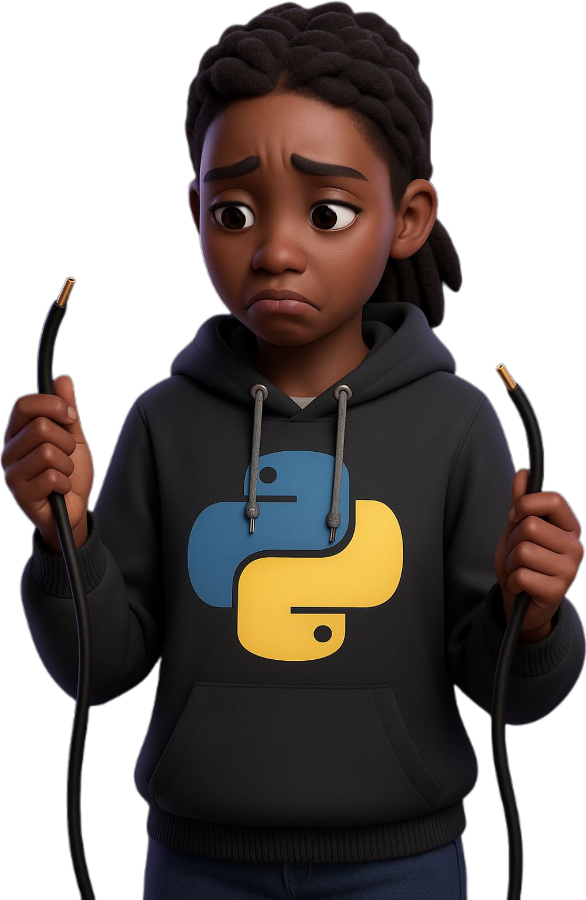

404 — Page introuvable
Oups ! Il est possible que la page recherchée n'est pas encore disponible. Tu peux retourner à l’accueil ou explorer d’autres ressources.

Si tu penses qu’il s’agit d’une erreur, contacte l'administrateur sur WhatsApp .